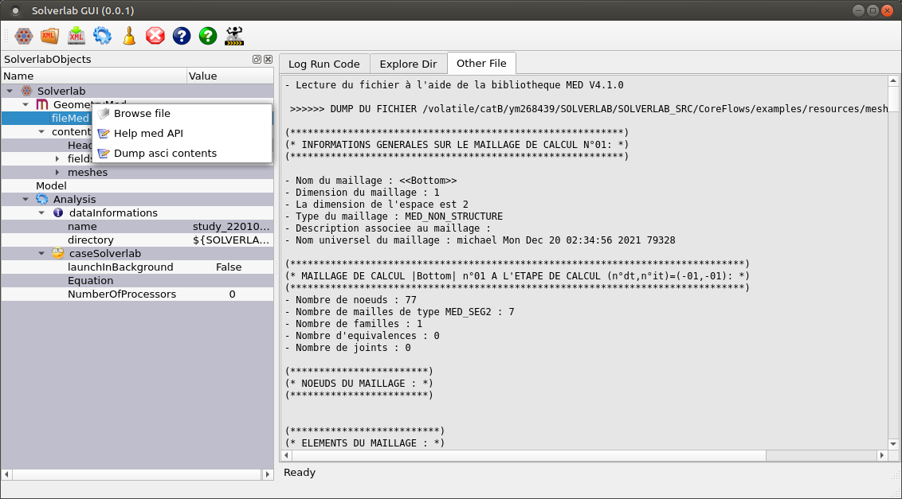

Solverlab GUI main widget¶
This is the main window of the Solverlab GUI. It’s composed of three parts:
- The TOOLBAR is at the top and is used to realise quick action
- The TREE VIEW is at the left and is used to import and modifie all data needed by Solverlab.
- The CONTENT TAB is at the center/right and has diverse utility

Toolbar¶

This toolbar contains icons related to actions, from left to right:
- New Solverlab data. Create solverlab case from scratch
- Load Solverlab data. Load case from previously saved case in a file Xml.
- Save Solverlab data. Save current solverlab case in a file Xml.
- Launch Solverlab calculus. Launch Solverlab code on current solverlab case.
- Refresh SolverlabObjects tree view.
- Clear Solverlab data model, remove Solverlab data tree (in SolverlabObject widget).
- Solverlab GUI help. Display this current documentation in a browser (html mode).
- Solverlab code help. Display Solverlab code manual in a browser (pdf mode).
- Solverlab Example. Show directory with example of implemented model.
Solverlab tree view widget¶
From this tree view widget named SolverlabObjects users can prepare Solverlab code data.

Modify tree view widget items values¶
There are some values as leaves of tree. Names and tooltips are almost as Solverlab code naming usage.
- Simple scalar values. User can modify value on mouse-left-double-click, selecting tree item nodes hovering column value.
- Other specific values. User can modify value on mouse-right-click, to get a contextual menu for modification, selecting tree item nodes hovering columns name and value.
Note
Some values are context specific and can be displayed only when they are needed.
Expand/collapse menu¶

This menu contains some actions to expand or collapse all or selected part of data tree. To activate this menu users have to mouse-right-click on head of arrow of tree item nodes (at left of item icon).
Delete/Insert menu¶

This menu contains some actions to insert, delete and reset all or selected part of data tree. To activate this menu users have to mouse-right-click on ‘name’ of tree item nodes (at right of item icon). The concerned items are usually not leaves (are items without a value).
Log Run Code widget¶
This widget displays log trace of Solverlab code execution.
Solverlab code is executed when users activate Launch Solverlab calculus button in the TOOLBAR.

Log Run Code widget menu¶

This menu contains some actions to display, but also edit all or selected part of current log trace, considering log trace as an ascii file. To activate this menu users have to mouse-right-click somewhere in Log Run Code widget.
Note
Using Open and Save actions in this menu, users can use this widget as an elementary text file viewer/editor.
Other File widget¶
This widget displays the content of the selected med file. It use the MEDCoupling API to do so.
The user can mouse-right-click on the fileMed field in the TREE VIEW and select the “Dump ascii content” context menu.